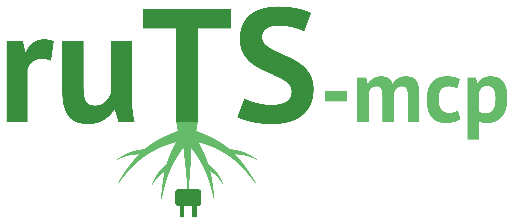

ruTS-mcp¶

ruTS-mcp - MCP-сервер для ruTS, библиотеки статистик русского текста. Он дает LLM-агенту инструменты, чтобы измерить текст, а не оценивать его на глаз: удобочитаемость, лексическое разнообразие, морфологию, синтаксис, стих, сравнение корпусов - каждое значение вместе со шкалой, по которой его читать, и границами применимости.
Возможности¶
-
Статистики текста
Десять групп статистик ruTS: базовые, удобочитаемость с классом школы и возрастом читателя, лексическое разнообразие, морфология, фоностатистики, связность, стиль и канцелярит, лексическая сложность, стих, синтаксис
-
Конкорданс
Все вхождения слова или словосочетания с контекстом, по словоформе или по лемме
-
Коллокации
Устойчивые сочетания и сочетаемость слова по восьми мерам ассоциации
-
Дисперсия слов
Насколько равномерно слова распределены по тексту: меры Гриса и другие
-
Ключевые слова
Слова, которые в тексте чаще, чем в русском языке или в другом тексте
-
Сравнение корпусов
Чем различаются два корпуса текстов по признакам стиля: атрибуция авторства, жанры, тексты человека и модели
-
Ресурсы
Шкалы удобочитаемости, нормы стиля и состояние словарей и модели spaCy
-
Промпты
Типовые разборы: удобочитаемость, канцелярит, стихотворение, SEO-проверка, сравнение двух текстов
Пример¶
На вопрос «для какого читателя написан этот текст?» агент вызывает analyze_text с группой readability и получает не только числа, но и их прочтение и оговорки. Текст - одно предложение канцелярита:
{
"name": "analyze_text",
"arguments": {
"text": "В целях повышения качества обслуживания клиентов в кратчайшие сроки осуществляется проведение мероприятий по модернизации оборудования, предусмотренных утвержденным планом развития организации на текущий период.",
"groups": ["readability"],
"descriptions": false
}
}
{
"readability": {
"consensus_grade": {"value": 25.5, "interpretation": "аспирантура (старше 22 лет)"},
"flesch_kincaid_grade": {"value": 28.06, "interpretation": "аспирантура (старше 22 лет)"},
"flesch_reading_easy": {"value": -39.95, "interpretation": "выпускник университета"},
"coleman_liau_index": {"value": 22.87, "interpretation": "аспирантура (старше 22 лет)"},
"smog_index": {"value": 26.57, "interpretation": "аспирантура (старше 22 лет)"},
"automated_readability_index": {"value": 26.31, "interpretation": "аспирантура (старше 22 лет)"},
"lix": {"value": 88.22, "interpretation": "очень сложные тексты, законы и канцелярский язык"},
"rix": {"value": 15.0, "interpretation": "университет и выше"},
"sis_grade": {"value": 15.3, "interpretation": "4-6-й курс вуза (20-22 года)"},
"matskovsky_index": {"value": 20.73},
"tuldava": {"value": 4.914},
"dale_chall_index": {"value": 27.88, "interpretation": "аспирантура (старше 22 лет)"},
"gunning_fog_index": {"value": 24.85, "interpretation": "аспирантура (старше 22 лет)"},
"reading_time": {"value": 0.1278}
},
"warnings": [
"Предложений в тексте: 1, меньше 30. Формулы удобочитаемости опираются на среднюю длину предложения, исходный SMOG - на выборку из 30 предложений: на коротком тексте значения неустойчивы, включая сводный класс, это грубая оценка"
]
}
Быстрый старт¶
Подключение к Claude Code и загрузка словарей и модели spaCy для групп lexical, verse и syntax:
claude mcp add ruts -- uvx ruts-mcp
uvx ruts-mcp download
Подключение к Claude Desktop, Cursor и другим клиентам и настройки сервера - на странице Установка.